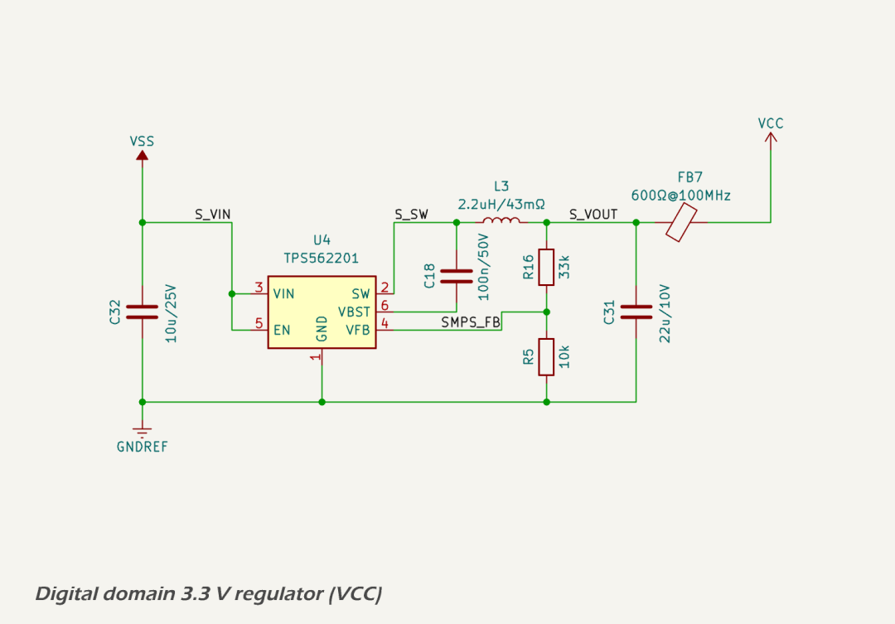
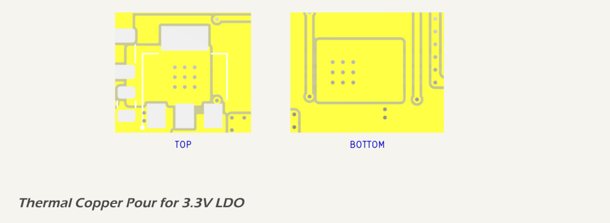

Digital Logic 3.3 V Domain (VCC)
The 3.3 V digital logic domain supplies all microcontroller, sensor, transceiver, and analog processing loads within the MDD400. It is one of the most critical power domains in the system, and supports high-speed digital communications, analog sensing, and protocol interfacing.
Design Criteria
The following loads are powered from the 3.3 V digital power rail (VCC):
| Load Component | Typical Current | Peak Current |
|---|---|---|
| Microcontroller (ESP32-S3) | 80 mA | 260 mA* |
| CAN Transceiver, logic side (ISO1042) | 5 mA | 6.5 mA |
| Ambient light sensor (OPT3004) | <1 mA | <1 mA |
| Dual op-amps (TLV9002IDR ×2) | 2.6 mA | 4 mA |
| Comparator (LM393DR) | <1 mA | <1 mA |
| Total | ~90 mA** | ~275 mA** |
* Peak current reflects ESP32-S3 operation with Wi-Fi or Bluetooth active at maximum transmit power.
** Total rounded up to nearest 5 mA.
Key design criteria for this domain include:
- Provide a stable, low-noise 3.3 V output.
- Support continuous operation at 329 mA with headroom for peak loads up to 640 mA.
- Maintain regulation from a +5.0 V input supply derived from the main 5.33 V SMPS output.
- Ensure thermal performance is within acceptable limits for ambient temperatures up to 40 °C.
- Minimize output ripple to support analog signal conditioning stages.
Circuit Description
The 3.3 V rail is generated by a Texas Instruments LM1117-3.3 low-dropout linear regulator, powered from the 5 V rail (after a blocking diode drop from the 5.33 V SMPS output). It supplies the ESP32-S3 microcontroller, CAN transceiver, I²C sensors, and analog front-end components.

Capacitive filtering includes:
- 10 µF local bulk capacitor at the regulator output.
- 100 nF decoupling capacitors at all major load inputs.
- Five RC-filtered 10 µF + 100 nF decoupling stages near the ESP32, op-amps, and CAN transceiver.
Protection
The LM1117 includes built-in protection features:
- Internal current limiting to prevent damage under overcurrent conditions.
- Thermal shutdown above 150 °C junction temperature.
- Short-circuit protection.
These protections are sufficient for the low-voltage, high-availability digital domain. No additional external protection is included beyond input and output filtering.
Performance
Performance is evaluated against voltage regulation, thermal limits, and load conditions. Total continuous load is ~90 mA, with peak load estimated at ~275 mA.
- Voltage regulation is maintained with >1.1 V headroom at all times (5.0 V input vs. 3.3 V output).
- Ripple is minimized via localized ceramic MLCC filtering and distributed bypassing.
The LM1117 operates well within its thermal limits even under worst-case environmental and load conditions (see PCB Layout below). Power dissipation is calculated as:
- 90 mA → 0.153 W → ~5 °C rise → Junction temp: ~85 °C.
- 275 mA → 0.467 W → ~15 °C rise → Junction temp: ~95 °C.
These figures assume a worst-case ambient temperature of 80 °C. Junction temperatures remain at least 30 °C below the LM1117’s 125 °C maximum rating, confirming a generous thermal margin.
Component Selection
- The LM1117-3.3 was selected for availability, simplicity, and predictable dropout voltage (~1.1 V).
- Input and output capacitors follow TI recommendations: 10 µF bulk + 100 nF ceramic MLCC.
- All passives are 0603 size and use X7R dielectric.
Filtering near high-speed digital and analog nodes includes additional RC-paired decoupling for noise suppression.
PCB Layout
The following thermal and electrical principles are are implemented in the PCB layout:
- The LM1117 regulator’s VO pin and tab (Pin 2 and center pad) are connected to copper pours on both the top and bottom PCB layers.
- The output planes are termally connected via a 3×3 via array, allowing heat to dissipate through internal and external copper.
- No thermal reliefs are used in the main power paths to minimize resistance.
- Decoupling caps are placed immediately adjacent to IC power pins.

This layout supports both low-noise operation and effective heat spreading to maintain regulator performance.